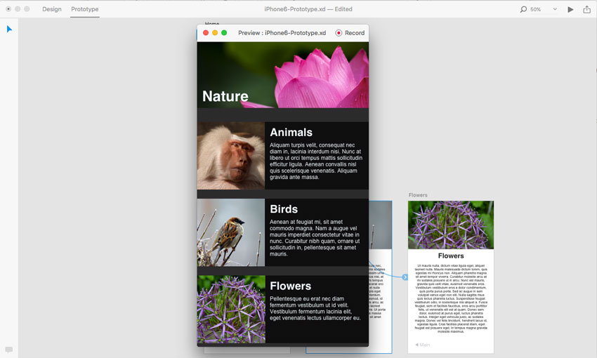
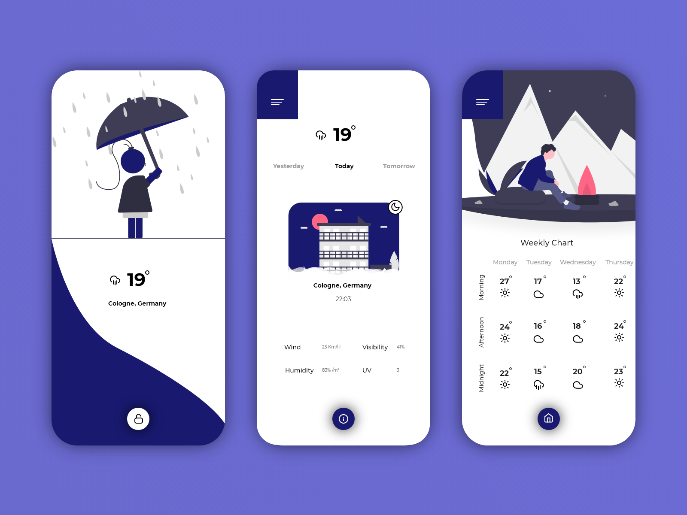

O PROGRAMA
Adobe XD (Adobe Experience Design) é uma ferramenta de edição de gráficos que funciona para criar Web e interfaces de sites de aplicativos. Com o Adobe XD, você pode criar protótipos interativos que simulam a navegação real em seu projeto, o que significa que você pode apresentar seus clientes a um trabalho muito mais tangível do fluxo de navegação do usuário. Isso facilitará a identificação dos aspectos que precisam ser corrigidos antes da fase de desenvolvimento e programação.
Assim que inicializamos o software, nos deparamos com a tela de boas-vindas, onde selecionamos o tipo de projeto, ou o modelo que vamos trabalhar. Por padrão, ele já disponibiliza algumas dimensões (Mobile, Ipad e Web), e para quem deseja trabalhar com tamanhos avulsos, ele também conta com a opção “Personalizado”. A organização das ferramentas, layout do programa, os tutoriais que o software oferece, torna o Adobe XD simples de usar até mesmo pra quem não tem familiaridade com protótipos e design.
TRABALHANDO COM O ADOBE XD
A criatividade é um quesito primordial para criar um site e/ou aplicativo. O Adobe XD (Experience Design), é uma ferramenta que tem como uma de suas principais finalidades auxiliar na prototipação de aplicações. Com ela é possível criar modelos e matrizes para plataformas diferentes, tanto mobile quanto web, com uma linguagem e interface bastante intuitiva. É um programa repleto de funcionalidades e recursos que dão agilidade aos processos, permitindo ao usuário interagir com o desenvolvimento de um projeto de uma maneira prática e otimizada.
As funcionalidades são similares às dos demais produtos da Adobe (Photoshop, Illustrator, entre outros), porém, suas ferramentas são ainda mais simplificadas. A organização das ferramentas, layout do programa, os tutoriais que o software oferece, torna o Adobe XD simples de usar até mesmo pra quem não tem familiaridade com protótipos e design. A aparência intuitiva dos comandos ajuda na funcionalidade do Adobe XD para configurar grid, tamanho e espaçamento de colunas e importar imagens de outros aplicativos em poucos cliques.
UX / UI DESIGN
A sigla UX significa User Experience (Experiência do Usuário), trata-se da experiência e como o cliente interage com o seu produto ou serviço. Já a sigla UI significa User Interface (Interface do Usuário) e trata-se de um mecanismo que guia o usuário pelas interfaces visuais, ou seja, sua aplicação durante o tempo em que ele a utiliza.
O UX designer é o profissional responsável pela estética de uma plataforma digital, com o objetivo de proporcionar uma melhor experiência ao usuário, baseada em seu comportamento, seja por meio da usabilidade, utilidade ou conveniência oferecidas na interação com o produto. O UI designer é responsável por criar o design criativo, por exemplo, de um aplicativo e fornecer a melhor experiência ao usuário, por meio de todo o planejamento feito em UX. E no meio disso é utilizado a ferramenta Adobe XD durante o desenvolvimento. Legal, não acha?
CONCLUINDO
Com isso, nota-se que um dos principais aspectos desse programa é a interatividade, já que é possível testar todos os seus projetos e viver a experiência do usuário assim como os clientes irão vê-lo. Tudo o que pode se fazer nesse programa é capaz de ser testado. Com certeza o Adobe Experience Design é uma ferramenta de extrema utilidade na vida de muitos e que não pode se perder de vista.
Alunos
Diego Calmon de Oliveira - 5306757
Guilherme Brito da Silva - 5306723
Lucas Silva Nascimento - 5306751
Rafael de Assis Nascimento - 5306722
Waler Daniel Neves Pereira - 5306598
Professor
Alexandre Neves Louzada
Referências:
"Adobe XD - O que é e para que serve"
"Como Criar um Protótipo de UI Usando Adobe XD"
"Prototipagem: O guia definitivo para colocar sua ideia na rua"
FIGMA
De forma semelhante ao Adobe XD, o Figma apresenta uma abordagem colaborativa ao design. Podendo também ser utilizado para realizações de protótipos no desenvolvimento de projetos. Ele oferece suporte a colaboração em tempo real. Os membros da equipe podem se comunicar e gerenciar suas próprias tarefas do projeto.
PROTOTIPAGEM

Prototipar é tangibilizar uma ideia, a passagem do abstrato para o físico de forma a representar a realidade mesmo que simplificada e proporcionar validações. Consiste na produção de uma versão inicial reduzida e de baixo custo de um produto, por meio dos chamados protótipos.